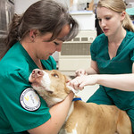
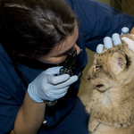

Milestones to Meet
- Graduate High School
- Finish Undergraduate Degree
- Apply and get into Veterinarian School
- Get a Doctor of Veterinary Medicine Degree
- Average time it takes to complete is 4 years.
- Taking classes in Biology, Environmental Sciences, Animal Sciences, Animal Medicine
- You have to get internships to get experience to graduate. Shadowing a vet, or becoming a vet technition.
This is a picture of a vet listening to a dog's heartbeat and doing a wellness check to make sure that the dog is healthy.
This is a nice picture of a vet with a dog who she just treated!

This is a vet and her coworker helping to do an ear examen on this dog who had an ear infection.

This is a vet doing an eye examen with an eye tool that checks the back of your eyes to an exotic cat.